/math-8ce4b16b22b58894aa86c421e8759df3.png "k") sei die Anzahl der Stufen für Faktor A.
sei die Anzahl der Stufen für Faktor A. /math-83878c91171338902e0fe0fb97a8c47a.png "p") sei die Anzahl der Stufen für Faktor B.
sei die Anzahl der Stufen für Faktor B. /math-584a81dbf5bf6aa737ba43567ad6307b.png "n_i") sei die Anzahl der Subjekte mit der i-ten Stufe von Faktor A.
sei die Anzahl der Subjekte mit der i-ten Stufe von Faktor A. Inhalt |
Einzelheiten zu den Algorithmen für das einfache und zweifache balancierte Design mit wiederholten Messungen finden Sie in dem Dokument Repeated Measures ANOVA.pdf.
Betrachten des Modells: Zweifache ANOVA mit gemischtem Design und mit wiederholten Messungen bei einem Faktor A zwischen den Subjekten und einen anderen Faktor B innerhalb der Subjekte
sei die Anzahl der Stufen für Faktor A. sei die Anzahl der Stufen für Faktor B. sei die Anzahl der Subjekte mit der i-ten Stufe von Faktor A.
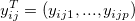
seien die Beobachtungen hinsichtlich des j-ten Subjekts und der i-ten Stufe von Faktor A.Definieren Sie die Fehlermatrix mit:
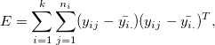
und die Hypothesenmatrix mit: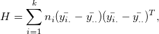
und die Hypothesenmatrix einschließlich Schnittpunkt mit der Y-Achse mit: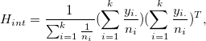
wobei
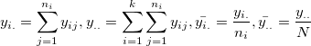
und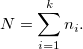
Der Freiheitsgrad kann durch
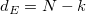
bzw.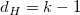
ermittelt werden.Angenommen, die Mittelwertvektoren der Stufen von Faktor A seien
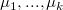
, außerdem sei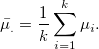
Die Kontrastmatrix sei
/math-b8927dc7ffec56da7d89517bdf88c99f.png "B_{(p-1)\times p}=\begin{bmatrix}
1 & -1 & \cdots & 0 & 0\\
0 & 1 & \cdots & 0 & 0\\
\vdots & \vdots & \ddots & \vdots & \vdots\\
0 & 0 & \cdots & 1 & -1
\end{bmatrix}.")
Um
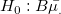
zu testen, können Sie die Werte für Wilks' Lambda, Hotelling-Spur, Pillai-Spur und die größte charakteristische Wurzel nach Roy berechnen. Die SS&CPs lauten: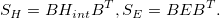
Hinweise: Alle Quadratsummen werden auf Basis von Typ III berechnet.
Die Nullhypothese ist
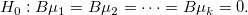
. Die SS&CPs lauten: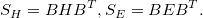
Die Designmatrix sei
/math-511b707f131edaf39ee2a6a958a35e85.png "X = \begin{bmatrix}
1_{n_1\times 1} & 1_{n_1\times 1} & & & \\
1_{n_2\times 1} & & 1_{n_2\times 1} & & \\
\vdots & & & \ddots & \\
1_{n_k\times 1} & & & & 1_{n_k\times 1}
\end{bmatrix}.")
Die Residuenmatrix wird ermittelt durch
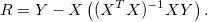
/math-69691c7bdcc3ce6d5d8a1361f22d04ac.png "M") sei die
sei die
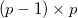
orthogonale Matrix, die folgendermaßen festgelegt werden kann/math-10621239e770e8df473420e90d18816d.png "M = \begin{bmatrix}
p-1 & -1 & \cdots & -1 & -1 \\
0 & p-2 & \cdots & -1 & -1 \\
\vdots & \vdots & \ddots & \vdots & \vdots \\
0 & 0 & \cdots & 1 & -1
\end{bmatrix}.")
Es wird angenommen, dass
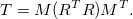
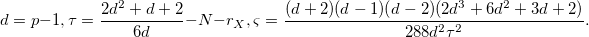
sei hier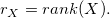
Dann ist die W-Statistik nach Mauchly
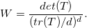
Der Wert des Chi-Quadrat-Tests ist
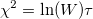
mit Freiheitsgrad.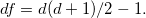
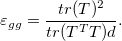
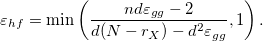
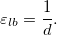
Einige grundlegende Berechnungen:
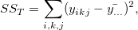
mit Freiheitsgrad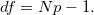
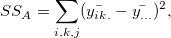
mit Freiheitsgrad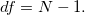
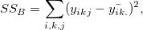
mit Freiheitsgrad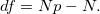
wobei
/math-e38f8fe6d7ffb147886aed2f6b95877d.png "\bar{y_{i..}} = \frac{1}{n_ip}\sum_{k,j}y_{ikj}, \bar{y_{...}} = \frac{1}{Np}\sum_{i,k,j}y_{ikj}, \bar{y_{..j}} = \frac{1}{N}\sum_{i,k}y_{ikj}, \bar{y_{i.j}} = \frac{1}{n_i}\sum_{k}y_{ikj}, \bar{y_{ik.}} = \frac{1}{p}\sum_{j}y_{ikj}, N = \sum_{i=1^{k}}n_i .")
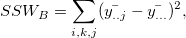
mit Freiheitsgrad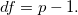
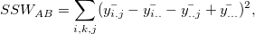
mit Freiheitsgrad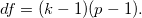
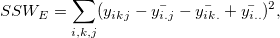
mit Freiheitsgrad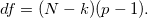
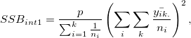
mit Freiheitsgrad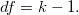
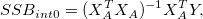
mit Freiheitsgrad Hier ist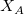
die Designmatrix, die mit Effekt A verbunden ist, während/math-57cec4137b614c87cb4e24a3d003a3e0.png "Y") eine
eine 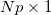
Matrix ist, die die Indexdaten darstellt.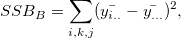
mit Freiheitsgradmit Freiheitsgrad
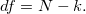
Es gibt verschiedene Methoden des Mittelwertvergleichs in Origin. Wir verwenden die NAG-Funktion ocstat_dlsm_mean_comparison(), um Mittelwertvergleiche durchzuführen.
Zwei Typen des mehrfachen Mittelwertvergleichs:
Einzelschrittmethode Sie erstellt simultane Konfidenzintervalle, um zu zeigen, wie sich die Mittelwerte unterscheiden. Dazu gehören Tukey-Kramer, Bonferroni, Dunn-Sidak, Fisher’s LSD und Scheffé.
Schrittweise Methode Führt nacheinander die Hypothesentests aus. Dazu gehören der Holm-Bonferroni- und der Holm-Sidak-Test.